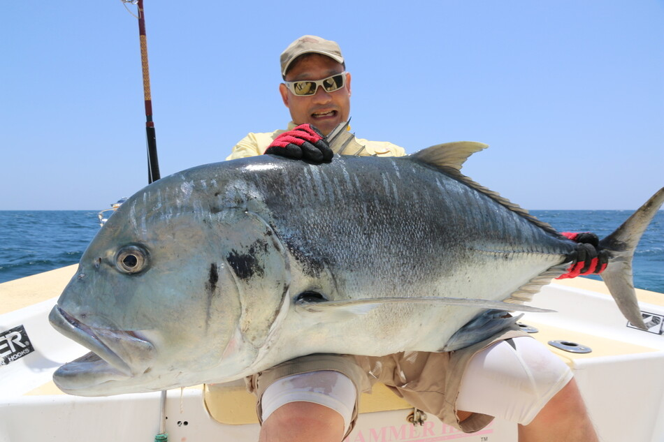
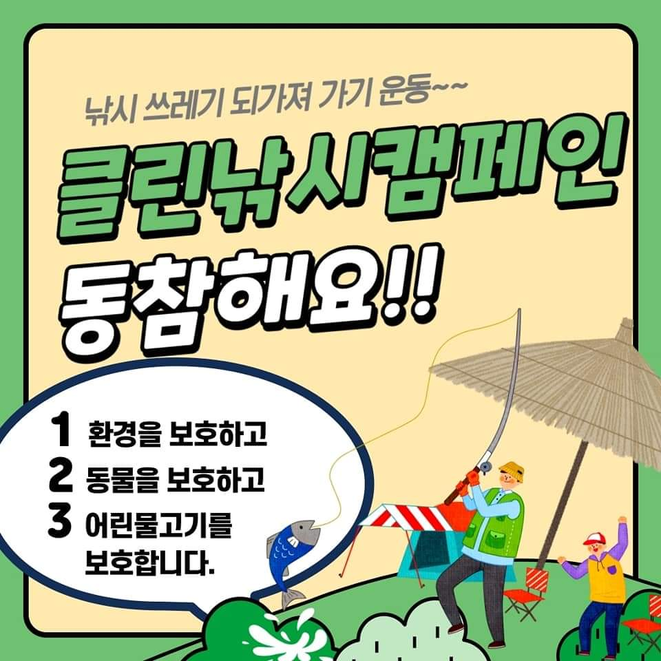

<link href="//maxcdn.bootstrapcdn.com/bootstrap/3.3.0/css/bootstrap.min.css" rel="stylesheet" id="bootstrap-css">
<link href="과제.css" rel="stylesheet" id="bootstrap-css">
<script src="//maxcdn.bootstrapcdn.com/bootstrap/3.3.0/js/bootstrap.min.js"></script>
<script src="//code.jquery.com/jquery-1.11.1.min.js"></script>
<!------ Include the above in your HEAD tag ---------->

 <!-- Static navbar -->
    <nav class="navbar navbar-inverse  navbar-static-top">
      <div class="container">
        <div class="navbar-header">
          <a class="navbar-brand" href="index.html">낚시왕Blog</a>
        </div>
        <div id="navbar" class="navbar-collapse collapse">
          <ul class="nav navbar-nav">
            <li class="active"></li>
            <li><a href="찌낚시.html">찌낚시</a></li>
            <li><a href="루어.html">루어</a></li>
            <li><a href="원투.html">원투</a></li>
            <li><a href="미끼와 종류.html">미끼와 종류</a></li>
          </ul>

          
          <ul class="nav navbar-nav navbar-right">
            <li><a href="회원가입.html">회원가입</a></li>
            <li class="active"><a href="로그인.html">로그인<span class="sr-only">(current)</span></a></li>

          </ul>
        </div><!--/.nav-collapse -->
      </div>
    </nav>

<section class="banner-section">
</section>
<section class="post-content-section">
    <div class="container">

        <div class="row">
            <div class="col-lg-12 col-md-12 col-sm-12 post-title-block">
               
                <h1 class="text-center">낚시왕 블로그에 오신걸 환영합니다.</h1><br>
                
            </div>

<div class="col-lg-9 col-md-9 col-sm-12">
<p class="lead"> 
<h3>
  낚시인구 800만 시대!<br>
  등산을 젖히고 올라 명실상부 국민 취미 1위로 등극한 낚시!<br>
  그 중에서도 바다낚시는 광활한 필드와 자연이 어우러지면서,<br>
  민물낚시와 다른 활력과 생동감을 선사해줍니다.<br>
  그런 만큼 안전에도 주의를 기울여야 하는데요.<br>
  오늘은 바다낚시에 입문하고 싶지만, 어떻게 낚시를 해야 할지 모르는 이들을 위한 지침서를 안내하고자 합니다.
</h3>
</p>
                 

     
<p></p>
<blockquote>
  <p>고1 때부터 서울릴낚시회 따라가 쏘가리 낚고
    오만, 몽골, 서뉴기니 등 괴어 찾아 삼만리
    국내 최초로 민물·바다 루어낚시 집대성한
    루어낚시 취미생활 40년 조홍식씨.</p>
  <footer>2015년 4월 중동 오만 남부 쿠리야무리야제도에서 43㎏짜리 ‘자이언트 트레발리(GT)’를 낚은 조홍식씨. 사진 조홍식 제공 <cite title="Source Title"></cite></footer>
</blockquote>
<p>중학교 1학년생일 때부터 루어낚시 취미생활 40년, 그는 “한 번도 가보지 않은 곳, 그곳에 존재하는 특별한 물고기, 그 미지의 세계에 대한 동경은 학창시절 그대로”라며 “항상 머릿속으로는 다양한 포인트에서 다양한 어종을 낚고 있다”고 했다. 어떻게 하면 그처럼 좋아하는 일을 악착같이 파고들 수 있을까. 그의 말은 의외로 단순했다. “포기할 건 포기하라. ‘나중에 언젠간 해봐야지’ 생각 말고 지금 당장 하라.”</p>
<br>

<div class="image-block">
  
</div>

<!--Start of Tawk.to Script-->
<script type="text/javascript">
  var Tawk_API=Tawk_API||{}, Tawk_LoadStart=new Date();
  (function(){
  var s1=document.createElement("script"),s0=document.getElementsByTagName("script")[0];
  s1.async=true;
  s1.src='https://embed.tawk.to/633644b537898912e96c13a9/1ge5vopk5';
  s1.charset='UTF-8';
  s1.setAttribute('crossorigin','*');
  s0.parentNode.insertBefore(s1,s0);
  })();
  </script>
  <!--End of Tawk.to Script-->

  <!-- Google tag (gtag.js) -->
<script async src="https://www.googletagmanager.com/gtag/js?id=G-MY1RNE63FZ"></script>
<script>
  window.dataLayer = window.dataLayer || [];
  function gtag(){dataLayer.push(arguments);}
  gtag('js', new Date());

  gtag('config', 'G-MY1RNE63FZ');
</script>

<br>

             </div>
            <div class="col-lg-3  col-md-3 col-sm-12">
          
                <div class="list-group">
                    <a class="list-group-item active list-group-item-danger" href="https://slds2.tistory.com/3585?category=600117" target='_blank'><h4 class="list-group-item-heading">우리나라 수산자원의 금어기 및 포획금지체장</h4> <p class="list-group-item-text">꼭 확인하여 우리나라 수산자원을 지킵시다.</p> </a>
                    <a class="list-group-item list-group-item-success" href="https://slds2.tistory.com/1255?category=600117" target='_blank'><h4 class="list-group-item-heading">짜릿한 손맛, 낚시를 시작하다</h4> <p class="list-group-item-text">내게 맞는 낚시는 무엇일까?</p> </a>
                    <a class="list-group-item list-group-item-info" href="https://slds2.tistory.com/309?category=600117" target='_blank'> <h4 class="list-group-item-heading">갯바위에서 죽어가는 생명</h4> <p class="list-group-item-text">갯바위에 버려진 각종 오물과 쓰레기들에 심지어는 대변까지..</p> </a> 
                </div>

                <div class="well">
                    <div class="media"> <div class="media-left"> <a href="https://www.nongmin.com/news/NEWS/FLD/NWS/358749/view" target='_blank'>  </a> </div> <div class="media-body"> <h4 class="media-heading">감성돔 10만마리, 통영 앞바다로…</h4> 경남도, 수산자원 조성 박차.</div> </div>
                    <div class="media"> <div class="media-left"> <a href="https://news.sbs.co.kr/news/endPage.do?news_id=N1006902134&plink=ORI&cooper=NAVER" target='_blank'>  </a> </div> <div class="media-body"> <h4 class="media-heading">갯바위 낚시객 덮친 '7m 파도'...</h4> 구조대원도 휩쓸려 다쳐.</div> </div>
                    <div class="media"> <div class="media-left"> <a href="https://www.ytn.co.kr/_ln/0115_202209290512125215" target='_blank'>  </a> </div> <div class="media-body"> <h4 class="media-heading">끊이지 않는 방파제 추락사고...</h4> 안전 불감증 여전</div> </div>
                </div>
            </div>
        </div>
      

    </div> <!-- /container -->
</section>


      